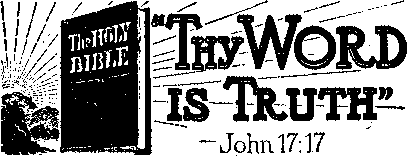

“Queen of Angels, Pray for Us”
■Such Would Make Queer Americans
Parochial Education Makes Poor Citizens 9
■ Postwar Conditions in Europe
England’s Regulations Continue
“Thy Word Is Truth”
A Colored Woman’s Witness, at Midnight
Interesting Experience in New York
Ten Years in the American Melting-Pot
Just One Happy Bastille by 1700
Britons Well Treated in Guernsey
Published every other Wednesday by
WATCHTOWER BIBLE AND TRACT SOCIETY, INC. 117 Adams Bt„ Brooklyn 1. N. Y,, U. S. A.
OFFICERS
President N. II. Knorr
Secretary W, E. Van Amburgh
Editor Clayton J. Woodworth
Five Cents a Copy
SI a year In the United States $1.25 to Canada and all other countries
NOTICE TO SUBSCRIBERS
Remittances; For your own safety, remit by postal note or by postal or express money order or by bank draft. When coin or currency is lost in the ordinary mails, there is no redress. Remittances from countries other than those named below may be made to the Brooklyn office, but only by International postal money order.
Receipt of a new or renewal subscription will be acknowledged only when requested. Notice of Expiration is sent with the journal one month before subscription expires. Please renew promptly to avoid loss of copiea. Send change of address direct to us rather than tc the post office. Your request should reach us at least three weeks before the date of issue with which it is to take effect. Send your old as well as the new address. Copies ■will not be forwarded by the post office to your now address unless extra postage is provided by you.
Published also in German, Greek, Portuguese, Spanish and Ukrainian. -
OFFICES FOR OTHER COUNTRIES
Australia 7 Beresford Rd., Strathfield, N.-8. W.
Canada 40 Irwin Ave., Toronto □, Ontario
England 34 Graven Terrace, London, W. 2
India 167 Love Lane, Bombay 27
Newfoundland P. O. Box 521, St. John's
New Zealand i 177 Daniell St., Wellington. S. 1
Philippine Island* 1219-B Oroquieta St.T Manila South Africa 623 Boston House; Cape Town
Sintered as second*class matter at Brooklyn, N. Y., under the Act of March 3, 1679.
‘Glad with His People* in Newfoundland
♦ I have decided to take my stand on the right side, for Jesus Christ and for the extension of His kingdom. I was always a member of the United Church, and I always thought, like the rest of them, that was the way Jesus wanted us to go, but since the first of August I have been reading your books, and in these four months I have made up my mind to accept this way.
My people! I do not even know the man’s name that came to my door. At that time I had no use for anything. I was weary, worn and sad. I am the mother of five sons and live in an outpost where there is so much work to be done that I hardly know which duty to perform first.
Well, when the man came, I obtained 50c worth of those little books, such as Peace—CW It Last? and a lot of others. I have been reading these every Sunday, and looking up the scriptures to which they call attention, and have found that they are true.
And now I want more reading matter, and want you to let me know what steps I must take to put myself on your side. Meantime I am enclosing $1.00 for The Watchtower, and want you to let that man know that I have read the books and am now ready to live for God.
He will remember me as the one from whom he obtained the bottle of milk. Had I known that he was a disciple of Jesus Christ I would not have taken any money for the milk.
My people! I want your prayers. I am all alone, except that T have Christ on my side; but with that I know that nothing can harm me. T will be looking forward to hearing from you, and receiving The Watchtower, as T am definitely interested. May God bless you in your work, and may you receive many souls for your hire. [From an island in Placentia Bay, Newfoundland] .
“And in His name shall the nations hope.”—Matthew 12:21, A.jS?.V.
Volume XXVII Brooklyn, N.Y., Wednesday, April 24, 1946 Number 694
Godless Parochial Instruction
IF WHAT an institution teaches is in flat contradiction of the teachings of Jesus Christ, the Son of Almighty God, are its teachings godly or godless? The answer of every honest person must be that such instruction is godless. That charge is herewith made against the parochial press, schools and pulpits.
The pope has made the statement that the Catholic press is “his very own voice”. Its statements therefore should be considered as emanating from him. With that idea in view one should take notice of. The Register (Roman Catholic), which contains the information: “We cannot understand the trinity, because it is a supernatural, perfect mystery.” That means, if it means anything, that there is no sense to the idea. Moreover, neither the word nor the thought of “trinity” occurs in the Scriptures. Note, by contrast, the pointed statement of Jesus:
It is also written in your law, that the testimony of two men is true. I am one that bear witness of myself, and the Father that sent me beareth witness of me. [John 8; 17,18]
These words of Jesus state as plainly as words vould express it that the Father and the Son are two separate and distinct personalities, not three, not one.
In the same issue of the periodical is a prayer composed by the “Most Reverend Father” Duane G. Hunt, D.D., bishop of Salt Lake City, in which that much-betitled gentleman winds up with this:
Mary conceived without sin, pray for us who have recourse to thee; pray for our eoun-try, which has been placed under thy protection.
Mary was never placed in charge of the United States government, and if she had any connection with the Boman Catholic Hierarchy, which most certainly she has not, she would be bound to be opposed, as are they, to this government of the people. The Hierarchy is seeking the destruction of every republic beneath the sun.
“Come Now, and Let Us Reason Together"
Almighty God put brains in human creatures with the idea that they should use them. When He said, “Come now, and let 'us reason together,” He meant just what He said. (Isaiah 1:18) And when Peter said, “Be ready always to give an answer to every man that asketh you a reason of1 the hope that is in you” (1 Peter 3:15), he certainly did not seek to multiply such unreasonable nonsense as is contained in the Jersey Observer from the pen of “Reverend Father” Walter Reilly, C.S.R.R.:
Wo have, perhaps, seen that famous painting of Augustine standing on the shore of the sea. He is clothed in the full robes of his office as a bishop. [Peter never had any sueh robes; nor, for that matter, did Jesus himself.] Near him is a little child with a pail and a shovel. Augustine is asking the child what he is doing. The youngster replies that he is going to get the ocean into the pail. [No such child ever lived.] Augustine then tells the child that it would be impossible to put the mighty ocean'into a small container. The child tells him in return that it will be no harder for him to do it than it would be for Augustine to try to comprehend the doctrine of the trinity.
This whole story is a lie on the face of it. A child smart enough to help a • bishop frame such an argument in defense of an indefensible and incomprehensible doctrine would never be such a fool as to think he could put the entire ocean into a pail. The desire of the storyteller is to exalt the clergy as custodians of mysteries, and thus to encourage the common people to finance them and keep them in robes and other things that the clergy delight in. As to the argument that nobody can learn to know Almighty God, what are the bishops going to do with Jesus’ own promise, “This is life eternal, that they might know thee the only true God”?—John 17: 3.
"Queen of Angels, Pray for Vs”
A circular letter from Francis X. Desmond, C. M., from the College and Seminary of Our Lady of Angels, Niagara University, Niagara Falls, N. Y., bearing at its top the caption given above, invites payment of $1 or more to help the poor souls that are waiting for the coin. Mr. Desmond tells about it:
Patiently they have waited, accepting our occasional ejaculation of prayer or Holy Mass during the year. But November comes! There is a great stirring in purgatory.
You should notice several things about this proposition. First, Mary is not the queen of the angels; not a single statement in God’s Word supports such an idea. The angels are responsible to Almighty God. They are His servants, not Mary’s. Second, there is no such place as “purgatory”. Not a syllable in the Scriptures can be found even hinting. that there is such a place. Third, if there were such a place as “purgatory”, neither Mr. Desmond nor anybody in fiis crowd would put Jiimself out very much upless you came across with the dollar or more. It is like a restaurant, where one homes in free but doesn’t get out without laying the money on the counter; '
The confusion that exists on this subject of “purgatory” is noticeable in a card marked “Printed in Italy”, on which appears a prayer to Jesus, who, it is said, is “consumed with the burning love for the poor captive souls in purgatory” begging Him, who, according to His own statement has 'all power in heaven and in earth’ (Matthew 28; 18), not to be too severe on a certain young woman named Madalena Marini, who died August 9, 1941, but to “let some drops of thy precious blood fall upon the devouring flames”. Sorry, but the facts are that not only is there no such place as “purgatory”, never was, and never will be, but Jesus is not now bleeding and has not been bleeding for more than 1900 years; and none of His blood ever fell into devouring flames, not a drop of it, and never will.
Paganism should be discarded from education. Take, for instance, the wide interest in Mother’s Day. This subject is explained in the Marshfield, Wis., NewsHerald, so clearly that it seems as if anybody ought to be able to see that Nature-worship is demonistic or of devilreligion origin: •
This force was always recognized as feminine, ajid was called “Mother of the Universe”, “Great Mother of the Gods,” or “Mother-Goddess”. The form of worship has changed through the ages from offerings to Mother-Goddesses at temple altars in ancient times, to the festival of Hilaria on the 15th of March by the Romans, evolving, with “Christianity”, into that of the Madonna and the Mother Church.
Paganism recognizes a variety of gods, but the Scriptures are plain that there is but one only and almighty God. “For there is one God.” (1 Timothy 2: 5) “To ns there is but one God.” (1 Corinthians 8:6) So, not only is it paganism for any to teach that any priest can order the Almighty off His throne, to come down and be sacrificed in the mass, but
it was paganism also when the “Reverend- Father” Joseph F. Flannelly declared, in St. Patrick’s Cathedral, New York city, that it is “sound Catholic doctrine, sound Christian doctrine and sound American doctrine that there,are times when Almighty God is forced by human malice to think thoughts of revenge”. That Almighty God purposes to avenge the wrongs done to Jehovah’s witnesses is perfectly true, but He is not forced into it. Nobody can force the Almighty into anything. »
More Inconsistencies
This magazine is not certain that the “Reverend” Dr. Lewis Gaston Leary, of West Milford, N.J., is Catholic. He may be a Presbyterian, but, in any event, he is alleged to have made the statement that “when the flag code was adopted in 1923, the Christian flag wasn’t in common use”, and he then went on to explain that the Christian flag is a red cross set in a blue and white field. It thus appears that God had no flag until 1923. How He got along for 6,000 years without one is not explained.
Newsweek has explained that the government War Production Board fixed it up to make candlesticks, rosaries and crucifixes of plasties, wood and other nonessential materials, so that 500 tons of base metals theretofore used for such purposes might be available for military necessities. This same story says interestingly : ■
The WPB exempted religious clothing from its original restrictions on men’s wear, thus assuring churchmen shoulder capes, cloak collars, and sleeve cuffs on cassocks.
That is going to make a big difference up in heaven, maybe, those sleeve cuffs and shoulder capes and cloak collars. What is the use of having theni if they don’t make a hit where it counts? Now, suppose you were an angel and saw a religious man going around without/any cuffs on his cassock, what would' ^you think? You need not answer. Maybe you can’t imagine yourself witnessing such a horrible sight.
Hardly does one get over the shock that God had no flag until 1923, and this scandalous situation that only for quick action some of the religious might have been left without cuffs on their cassocks, until out comes the Denver, Colo,, edition of The Register with the solemn statement from the pen of Frank La Tourette:
Membership, therefore, in the Catholic Church is an essential condition of salvation.
For those who voluntarily refuse to profess its truths, to receive its sacraments, or be governed by its authority, salvation is impossible. ’
This thing seems to have gone, to Frank’s head, but the chances are that if you were to see Frank, he has his head tucked underneath his arm, where no ideas or other things can get to it.
Meanwhile Celsus Wheeler, O.F.M., director of the Franciscan Fraternity, St. Bonaventure, N.Y., is willing to accept $25 from you for perpetual enrollment in a purgatorial society he is oper-: ating, so if you have the twenty-five dollars, and will send it on to him, and don’t let on that you are not a Catholic you might get by the gate all right, though • probably the smell of burned feathers _ will stick to you for a long time. You can’t go into “purgatory” and come out on a $25 ticket without smelling.
Horses, donkeys mules and dogs are stiirbeing blessed by Catholic priests at the villages of Turtmann and Bellinzona, Switzerland. It doesn’t hurt the animals, and the money feels good in the priests’ pockets. '
Autohiobiles and bicycles are still blessed at Silver Spring, Maryland, and the help of St. Christopher was invoked. ■ There is no Scriptural account that any of God’s people seek protection by any such method. The apostle Paul, greatest traveler of all the apostles, was three times' shipwrecked, and once was, a day and' a night in the deep. ’ ‘
Francis Cardinal Spellman said in one of his sermons that “falsehood, whatever its sphere, has no more legitimate claim to he freely disseminated than have the germs of disease a right to formal cultivation in the blood stream of the individual”. That is all right, as far as it g$>es, but in the same sermon the same man wanted young persons to “offer prayers to Our Blessed Mother that, in some miraculous manner, peace may be restored to the nations”. The cardinal knows that Jesus stated that prayers are to be offered to the Father in heaven (not to any woman); so “prayers to Our Blessed Mother” are out of order, a falsehood, and hence, according to the cardinal, have no “legitimate claim to be freely disseminated” or offered. So he is inconsistent.
Education
The word educate means “to lead out”. Jesus was an educator of the highest order, because He taught the people, to lead them out of ignorance. The Roman Catholic Hierarchy does everything possible to keep the common people in ignorance. The Register explains one way by which this is done. The entire hocus-pocus is carried on in a language that nobody understands, in many instances, not even the priests themselves, whereas Jesus taught the common people in their own tongue, and they “heard him gladly”. (Mark 12:37) The article said:
The tendency in the Latin rite is strongly against the use of the vernacular. Various attempts to introduce it have been dismissed. In the Byzantine rite, the tendency toward the vernacular has been more marked, but the use of the vulgar tongue seems to be only tolerated, not encouraged. The United States has two large dioceses of the Byzantine rite, both of which use Staroslav, a dead language but one closer to the vernacular of at least some of the people than Latin is to English or even to the modern Romance languages. The Armenian rite uses the ancient classical
Armenian, hot the modem tongub. The Pure Greek rite uses New Testament Greek,’not modern Greek. ■
The business of hiding the truth from the people receives its recompense. Sooner or later the people find out that they cannot trust their teachers, and so they desert them. Thus the Catholic Daily Tribune, Dubuque, Iowa, for 22 years the only Catholic daily in the United States, expired. According to the Catholic Directory it had a circulation of only ?,088 copies and sold for $4 a year. This was $3.99 more than it was worth. In a column bemoaning the demise of its sister paper, The Register explained that a year before the Tribune’s death-rattle it had been offered a controlling interest in the Tribune as a gift, and it then added the curious and self-evident falsehood, “The Catholic press of America is growing so big it must be Church-controlled.”
Something More than Bluff
Neither the Hierarchy nor its children have yet learned the great truth that while much can, be accomplished in this world, the Devil’s world, by pure bluff, yet the time, comes when the bluff is called. Such a thing took place at the village of Duquesne, Pa. The little town ■ has a Catholic school once called Holy Ghost College, which consists of a single and very old type of brick building (without elevators), which decided, perhaps to grab state funds, to call itself Duquesne University. To help put this across, the old trick was employed of enlisting some non-Romans on the faculty. Acting in too much of a hurry to Romanize everything, about two dozen of the faculty quit and the Middle States Association of Colleges and Secondary Schools (the accrediting body for colleges, universities and schools in the Middle Atlantic region) decided that the institution can no longer be accredited by them. Any accredited institution may now refuse to recognize any marks obtained by a student at Duquesne, and, in case of his transfer, may compel him to do his work all over.
The worship of ignorance and superstition yields some comical results. An Oklahoma subscriber writes, cheerfully:
A friend of mine worked as a domestic in a Catholic family. A bottle of “holy water” was kept in the pantry on a shelf. One night a fire broke out in the block and the lady rushed to the pantry, seized the bottle and sprinkled it all over the house. It did the work, but. the next morning showed she got hold of the bluing bottle instead. Think of all the money she saved! Bluing is only 10c a bottle.
Archbishop John G. Murray, of St. Paul, seems deathly afraid that some of the common people of his diocese may learn something. In a communication to the priests of his diocese he said:
Catholies may not accept membership in any organization before informing themselves through their pastors or confessors concerning the character of the organization, and both pastors and confessors are bound in conscience to investigate every organization before they give any answer to an inquiry from any person. Catholics may not attend graduation exercises or be present at baccalaureate addresses in non-Catholic churches but must absent themselves and receive their diplomas in private, if attendance is imposed on the entire class. Catholics must avoid public lectures and public forum discussions, unless they are advised by their pastors of the safety of participation, nor may they take part in Bible reading, Bible interpretation, religious functions, devotional exercises, initiation ceremonies, chapel services, religious purpose programs, moral problem discussions, under any auspices other than that of the Catholic Church.
Such Would Make Queer Americans
It goes without saying that Archbishop Murray is not trying to make good Americans: he is trying to make Catholics. And when he has made them they will not even know as much as Murray himself. Such are the kind of citizens that ring for the police when they see a neighbor who wears galluses instead of a belt, or vice versa, or who eats pie with a fork instead of a knife, or who wears a felt hat when he should wear a sombrero, or who uses the wrong kind of shaving cream, or takes the wrong newspaper, or goes to the wrong church, or votes for the wrong man. Whatever the priest thinks, they think; whatever he says to do, they do.
To start with this country was a Protestant country, not a Catholic one, and it is less than one-sixth Catholic even now; but to hear some of the Catholic spokesmen orate one would think it was at least 99.44-percent Catholic. For instance, how about, this from the lips of “Reverend Father” John B. Daley, spokesman for Bishop James E. Kearney of Rochester, N.Y., who, at a “blessing” of a Roman Catholic college in that city, said of American public schools:
We have been nursing at public ckpense too many cuckoos who would, if given the chance, turn us out of our nests. The truth is that religion (Roman Catholic, exclusively) must form the basis of any education, and that education with religion omitted Isn’t really education at all.
The public school system in general use throughout the United States is the best school system beneath the sun. The results that have been obtained prove it, despite its defects. In Missouri, it has been definitely decided, and properly so, that public tax money cannot he used to support so-called religious schools. The court held that any attempt to. teach children religion in the public school, to segregate children of different faiths, or to spend public money to aid schools operated by a religious sect, violated constitutional rights of full religious freedom. The case arose in Meta, predominantly Catholic community in Osage county, where ten years ago the St. Cecilia parochial school was placed in the state school system and Catholic nuns continued as teachers by the local school board.
The Hierarchy, which seeks so assiduously to break down the American school -system, by demanding that schools be closed for stated periods each week, so that .the children can be misinstructed ’• in both Americanism and in God’s Word, * ignores the fact that the children average to attend school only about 36 weeks in the year, and 30 hours in the week. Thus their total schooling is crowded into 1,080 hours in the year, while the time they arc not in school is eight times as long, or 8,640 hours per year. The demand that children stop studying that 1+1+1=3 to learn that 1+1+1—1 (as trinitarians teach) is stark nonsense.
By contrast with the legislators and courts of Kentucky, Missouri and other states, and fighting against their own public schools, the weak-kneed legislators of the state of Washington decided that all private and parochial school pupils are to ride in the school buses, and the legislators of Oregon repudiated their former law that textbooks may he supplied only to public school pupils. These two decisions were published in a single issue of The Register (Catholic) and show how rapidly the American public school system is being undermined by the Roman Catholic Hierarchy, riding on the backs of spineless and conscienceless politicians.
Get Your Soul Reinstated
Have you heard about the new Montana business? The Glens Falls, Mont., Post Star tells of it in a column entitled “Parish visitors to help pastor reinstate souls: to call on members of St. Alphon-sus’ church to strengthen faith”. A flock of nuns are to call on all the members, bring back their faith, “adjust irregular marriages,” see about baptism, first communion, confirmation, instruction of public school children in religion,, correct indifference, wrong reading, etc. After the souls have been reinstated they will be expected to cough up more liberally
8
than they have Seen doing .recently; and that’s that.
A favorite plan of Catholics to try to put their ideas across is to write something pro-Catholic and at the same time deny that they are Catholics. This office has received countless such letters. In most instances they are anonymous and give no addresses, and constitute a dead give-away as to the religion and the “education” of the unfortunate penman. Take this for an illustration. In the Seattle Post-Intelligencer, Albert II. Ryan advises his readers if they are disturbed or worried to go into any Roman Catholic church and sit down and pray, and concludes with the disinterested remark, “You will always find the doors of Catholic churches open. I am an agnostic.” That was so helpful of Ryan! Had his name been Sullivan, Kelly or Murphy, one might have questioned his agnosticism.
The newspapers today are mostly under Catholic control. Catholics are in key positions where they can kill any story they do not like, and where the results of their “education” are painfully manifest. As a whole, the New York Times is away ahead of most newspapers in its proofreading arrangements, but some of their proofreaders seem to have been educated parochially, and with the usual painful results. The pope wants everybody to think that he is apostolic; so in a cable to Washington, to his bishops, he extended his “apostolic” benediction. The proofreaders changed it to “Apostilic”. That was bad enough. Then Cardinal Dougherty dictated a reply to the pope and worked in the word twice in two sentences, and the proofreaders made it “Apostilic” twice more.
Not being able to teach the people anything about what the Bible really contains, more and more clergy are going in for magic, to get the money. Thus, at Prairie du Chien, Wis., the “Reverend Father” Paul Monarski rolls a piece of paper until it resembles an egg, and then
consolation breaks the egg. Jie pulls a rabbit out of a cylinder open at both ends, unites several pieces of clotheslines into one line, and pulls coins out of the air. That’s right, Paul. That scheme will enable you to keep away from the plowhandles for . yet a little time.
Occasionally there is a slip, and some truth gets through. Thus, in the appendix of the Douay Bible (the Catholic version) it is stated correctly that "our Lord was about thirty years of age when he began his public ministry”: that "Christ preached three years and a half”, until he was put to death, and that "His death took place . . . Nisan 14 [about March 31]”. Put these three statements together and you have the truth that Jesus was born about October 1, and not December 25, and that "Christ’s Mass” (Christmas) is of heathen or demonic origin, as has been many times shown in these columns.
Parochial Education Makes Poor Citizens
Mathias Stonitsch, Brooklyn, N. Y., former church sexton, was sentenced to read the Bible for robbing the poor box of the Roman Catholic Church of St. Bernadette. Mathias probably never saw a Bible in his life, and if he knew anything about the history of his sect, .he would know very well that the popes have, in bygone years, denounced the Bible and declared that only the priests can understand it., But Jehovah’s witnesses have been so active in turning on the light that the “Church” has had to do something to satisfy the demands of the parishioners and Mathias will no doubt get one of the new Catholic Bibles, and may learn something. It is to be hoped that he will. • ■
An American boy, educated in an American public school, would know better than to apply a branding iron to a fellow citizen, but those parochially educated have done such things. The Kansas City Star has a three-column story by Paul Wellman, the headlines of which read: "Kansas Citian Gets Relic of Days When Enslaved People Were Branded. Iron in Collection of J. Milton Freeland Is of the Type Used by Spanish Conquerors in Mexico: Mark Was Burned in Skins of War Prisoners and Ranch Slaves Who Were Among the First Cowboys: Cruel Practice Persisted Until Comparatively Recent Times.” Two paragraphs are selected;
When Hernando Cortez made his conquest of Mexico, he was at first driven out of Tenoehtitlan and when he returned he put down the resistance of the brave Aztec Indians with ferocity. How many the Spaniards killed will never be known, but in the end even they wearied of this slaughter, and took many prisoners. Of these the “worthless” were later slaughtered, but the strong, healthy and tractable . . . were kept as slaves and distributed among the Spanish grandees to work the land they had appropriated. Cortez went one step farther than Hitler. He caused his slaves to be branded on the cheek with a G-for guerra (war).
The methods of human branding varied. The writer has seen, in Portuguese West Africa [all of which is exclusively parochial], a sort of human pillory used in branding convicts in that colony, so devised that the head was locked immovable until the mark could be placed on forehead or cheek. But Diego Rivera, the Mexican muralist, in his mural depicting the conquest of Mexico, illustrated the Spanish soldiers as binding the captives, and holding them, usually by the hair of the head, while the hot iron was pressed against their faces. Rivera, a great student of history and legend among his people, must have had some strong basis for this presentation.
Of course, anybody that would brand a fellow creature would cruelly murder him aft quickly as he would look at him.
Why the Parochial Godlessness
So the parochial schools are godless. They cannot understand the foolish doctrine of the “trinity”, but insist on teaching it. They have placed Mary in charge of the United States, but she isn’t in charge. The one that is in chatge is the same one that took Jesus up into a mountain and promised Him all the governments of mankind if He would fall down and worship him.
They are godless because they insist on teaching a “purgatory” which is not even hinted at in God’s Word, and they * want money for getting people out of a place that doesn’t exist. They talk about great stirrings there and about Jesus’ blood falling on the flames. That is all one big falsehood. They talk about ‘God’s being forced’. And they must have cuffs on their cassocks; it will make so much difference. -
Jesus said that prayers must go to Almighty God, but the much advertised Spellman says that is a mistake, that they should go to Mafy instead. Jesus taught the common people in their own vernacular, but Spellman and his gang want Latin or some other language, so that the people will not be able to catch on to the fact that there is no sense at all to any of their gibberish.
The parochial system does not work. It turns out far more criminals than any other system in existence. It is a breeding ground of intolerance, and the priests look upon it as such and use it as such, even to the branding of human creatures with hot irons. America does not want godless parochial schools, and Catholics have written to this magazine repeatedly to just that effect.
TWO Americans, N. H. Knorr, president of the Watchtower Society, arid his secretary, M. G. Henschel, who spent the first half of this past winter traveling throughout the various war-torn countries of Europe in an effort to relieve the suffering, returned to this country with a very vivid impression of the European picture. Words, they said, can tell only in a feeble way the heart-rending conditions.
In an interview with these two travelers the following information was gleaned that will be of interest to all Consolation readers.'As Mr. Knorr and his secretary pointed out, Europe will probably never recover completely from the war that has wrecked it. “When you have a war, you have devastation of property, you have' a lowering of the moral standards of the people, you have sickness and disease, you have people starving, and, especially, you have people losing faith in Almighty God.”
England’s Regulations Continue
The first country in which these two Americans landed was England. It was the early part of November, and when driving through the countryside everything looked fine and peaceful. But things were normal only on the surface. These travelers learned that regulations were still very tight and the people really did not get the proper food. “In England even if you have a farm you can’t eat what you want to; the government looks after that little detail for you. For example, the Watchtower Society’s farm, about thirty miles from London, was completely controlled by the government. You couldn’t go up there and say, ‘I’d like to have some eggs today,’ or, T want some chickens today for the Bethel family in London.’ No, you cannot do that. People there get perhaps one egg every six weeks. Now, what would you do with one egg in six w’eeks if you were a cook?”
Norwag Still Remembers
In Norway the people are still in need of food and clothing. When the Nazis were there they would go about the farms and steal butter and other necessities from the farmers, like shoplifters. And when a German officer got on a
crowded tram and wanted a seat, he would tell a person to get up and give him one.
Norwegians are still very bitter over the mistreatment they received under the Nazi rule. They still talk about things like the curfew law, and one incident that happened was the following related to these two visitors: “An old lady who lived up above the shop that she conducted was just a minute late in closing up one night. She had to go out the front door of her shop and about two steps to the right and then upstairs. Well, this particular night when she was just a minute late she never took the second step, After the first step the Nazi on the corner shot her?’
Economically, Norway’s neighbor Sweden was by far the best country visited in Europe. The only thing lacking at present is coal and fuel oil. Everywhere you go in cities like Stockholm, you see great piles of wood, 15 or 20 feet high, for the purpose of heating apartment houses, stores and offices. Ordinarily Sweden needs 8,000,000 tons of coal annually. But since the war she had received only a fraction of this, something like 200,000 tons which has been imported from the United States.
Sweden made millions of dollars during the war and has plenty of food and clothing. But one thing that many Swedes acquired that was not good was an extreme love of pleasure. Generally speaking, they have small regard for the church and little faith in the Bible, especially in the cities.: And no wonder, when their clergy go about and preach evolution contrary to the Bible. When Jehovah’s witnesses go to the homes of the people with the message from the Bible the people often say, “Well, our clergymen and pastors say the Bible isn’t true.” Yet the light of God’s Word has not been blacked out in Sweden; it is exposing these lies of the Devil. As one clergyman wrote in the newspapers: “There are so many of them [Jehovah’s witnesses] on xthe street corners of
APRIL 24, 1944
Stockholm that there must be at least 100,000 of them here.”
Poor Little Pinland
Finland is another of the countries visited. The people there are badly off; their mental attitude is one of defeat. “Poor Finland,” is what one hears from all Finns. They think that the great powers like Russia, Great Britain and the United States are responsible for Finland’s condition because they have to pay over $60,000,000 reparations annually in the next five years. Food, paper and metals are used for export whenever possible, in order to raise money for payment of reparations. So, while Finland has plenty of food and good resources, the people get little meat, butter, milk, fish and cheese. Clothing is scarce, even if one has money to buy.
Concerning the paper situation, Mr. Knorr said, “The Finnish government knows that the Watchtower is operated by an American corporation; so they decided that if any printing is going-to be done in Finland the paper will have to be purchased with American dollars. So, while I was there, I made an arrangement with the government that the American corporation supported by Jehovah’s witnesses in the United States would buy with American dollars all the paper that we could use in Finland for the printing of the .truth.”
Denmark Bas Plenty of Food
It may seem strange, but a few hundred miles from countries where there is a shortage of food is the agricultural country of Denmark, where there is plenty of food. In fact, it is said they have more food than they know what to do with, but because of commercial interests and foreign exchange the Danish government is keeping it until they can get what they think is the right price. The pathetic thing about it is that while the warehouses are bulging with food the people of Denmark themselves cannot obtain all they want. Denmark is also short of clothing.
11
For a time it was .possible to ship packages of food to the starving people of the Netherlands, but because a few selfish people sent food parcels at exorbitant exchange rates for goods the Danish government put a stop to such shipments. That is the way things go; under i the Devil’s wicked rule of this old world * the good suffer with the bad.
“While we were in Denmark/’ Mr. Henschel said, “a good-size headline appeared in: all the newspapers saying that on December 22, 23 and 24 the people would be allowed to heat water so that ■they could take a bath. There is no fuel. They used to get it from Germany, but not any more. So the whole of Europe seems to be unbalanced.
Terrible Conditions in Low Countries
The Netherlands was by far the worst hit of all the countries visited. The shortage of food, electricity and transportation facilities is very acute. The people liye on a basic diet of potatoes and . bread. The. Nazis robbed them of about everything they had, including most of the railroad stock and industrial machinery. Over 2,000,000 bicycles were stolen from .the people. During the war it was a very common occurrence for a man to be riding down the street on his bicycle and have a German SS trooper stop him with the order, “Come over here.” Asked where he was going, he would say, “I’m going to work.” “Well, you’ll be a little late today; we need this bicycle in Germany.” So the mafi walked and the bicycle went . to Germany. A fisherman might be coming in, when a Nazi patrol boat would come alongside to inspect his permit papers. Asked ■whether he had caught any fish he. would t say, “Yes, I got two barrels of. fish.” ' “Well, that is fine; we need those fish at camp, so we’ll take them.” WhaX did they care if this poor man went home from a day’s work without enough food to feed his own family? : .
. .Today things, are just the other way around. In. :Germany, especially, in. the French section, it is reported that if they see a Gbrman coming down the street with something they want, they say, “Come over here.” So it goes.
, Throughout all these countries there is much stealing. Especially is this noticeable in Catholic countries like Bel- , gium. Mr. Knorr said that “during the war it became quite popular for the people of Belgium to steal anything from the Germans, and they had to if they wanted to eat. Now the Germans are out and the Allies are in, and, as a banker told me, the people have not changed their bad habits; they are still stealing.”
The black market exists in all countries, but in France it is particularly bad. There you can buy a pair of socks for probably $7 or $8 if you have ration points; if you don’t have the points you may pay $15 or $20.
Switzerland in the Wintertime
In this country the Watchtower Society’s president and his secretary found conditions quite normal except for the lack of fuel. Rationing of clothing has been discontinued, but fuel is very scarce. Coal formerly came from Germany and France. Throughout Switzerland people work in cold offices and factories; they live in cold houses; they eat in the cold and sleep in the cold. The people wear all their heavy sweaters and coats in the offices and shops as if they were . outdoors. What little fuel there is must be conserved and used to cook with rather than used to heat houses to any extent. ■
Mr. Knorr said that before he left for Europe, he had sent word to the witnesses in Switzerland for them to do all possible to relieve the suffering of their coworkers in other parts of the Continent. So, by the time he got to Switzerland he found them very busy working on this job. “It was a real pleasure to be there in the Berne Office and see the witnesses sorting out these clothes just as }ye had been packing them in Brooklyn for some time.” In that small country the 1,600 publishers responded valiantly in sending things to the Berne Office for reshipment to Germany and elsewhere. It meant sacrifice, because they gave good clothes. Contributions of money were also made for the purchasing of food supplies from certain organizations in Switzerland, and this was sent to Germany, Austria, Italy, and other countries.
Relief for the Needy
During the war Jehovah’s witnesses in the neutral countries of Europe did everything they could to get the spiritual food to their faithful Christian companions in the other countries. Then, as soon as it was made possible to send ma
terial food and clothing into the war zones they arranged to do this also. Mr. Knorr pointed out that the Lord did not give Christians any guarantee as to how much food they would have or what kind they should eat. But God did guarantee that He would take care of those that sought first the kingdom of God and His righteousness. So, then, Jehovah’s witnesses in Europe have been content; they have not complained. For food they may have had only a little bread and potatoes; for shelter they may have had a partial roof over their heads; for clothing they may have had their wardrobe on their backs. They have not asked for more but they surely will appreciate very much what has been sent them.
Sorting out and repacking the tons of clothing. Over 300,000 overcoats, underwear, sweaters, shirts, dresses, pants, baby clothes and blankets were handled. Also some 7,000 pairs of shoes.
It is true that the United Nations are trying to bring aid to the suffering ones of Europe; but their ■ways of doing things are too slow. If relief 1 was to be gotten to * these people in time to be of use to them, then the Watchtower Society must act quickly and do everything it possibly could.
was put Upon the Dan- caae had to be weighed, labeled, and steel-strapped. To expedite isn government in an the a spray gun was substituted for the hand brush,
effort to ship food from
In the north, Jehovah’s witnesses in Sweden shipped two tons of clothing into Norway and three tons into Finland. Pressure there into other countries, and some was shipped into the Netherlands. Efforts are continuing in Denmark with the aim of getting food into Poland and Germany. From the little country of Switzerland over five and a half tons of clothing were shipped into Germany. More than $10,000 worth of food was also sent in. When more food is obtainable it will be purchased and shipped from there.
The Watchtower Society in the United States has made large shipments of clothing to Austria, Belgium, Greece, France, Poland, and the Netherlands. This was packed in, cases measuring 24 cubic feet and weighing from three to four hundred pounds each. Below is a
of the amount sent
to each
tabulation country:
Cases
Austria Belgium Greece
In addition
France
Poland Netherlands
Cases
77
160
230
40
51
66
to
this, 80 cases for
Czechoslovakia and 105 cases for Germany are packed and awaiting shipment. All together, 809 cases of clothing,, with
a gross weight of 287,181 pounds, or more than enough to fill 9.5 American freight cars, have been gathered together by Jehovah’s witnesses in the United States for the needy ones of Europe.
R. C, Hierarchy in Postwar Europe
These two travelers who had returned from Europe were asked what the position and standing of the Boman Catholic Hierarchy is over there, and whether she is held in great esteem. Generally speaking, the people are aware of the collaboration between the Hierarchy and the Nazis. Especially is this known in the Russian zones. The fact that the Vatican backed up the dictators is also realized in Catholic countries like Belgium.
In Belgium the Roman Hierarchy engineered a rather dirty deal for the Catholic king Leopold and gained for themselves much hatred from the people. It is no secret over there that the king, who was supposed to be a war prisoner, got tangled up with a commoner, and, almost before he knew it, found her to be expecting a child. So through his bishop, the pope, by a special arrangement; was able to move back the date of the king’s marriage to this commoner so that her child would be considered legitimate. In this way the pope was able to favor Leopold, who had not resisted selling Belgium out to the Vatican’s agent Hitler. But the people did not like that, and so, since the war, there has been great opposition to Leopold’s returning with his Vatican-'‘blessed” child.
However, the Hierarchy is worrying more about Russia and her influence in Europe. She is therefore ■ doing everything possible to upset Russia’s plan for dominating continental Europe. What the future years hold we do not know, but at present the Hierarchy is fighting tooth and claw to gain back all it lost in prestige due to backing up Fascism and Nazism, while at the same time it is endeavoring to retain all it gained by such collaboration. It is a desperate struggle.
Jehovah’s Faithful Witnesses in Europe
The president of the Watchtower Society, after traveling throughout Europe, was able to learn what the people over there think of Jehovah’s witnesses. Do they like the Lord’s witnesses or not? Generally speaking, they do not. The Communists who were in concentration camps with Jehovah’s witnesses have no respect for the Bible, and so they think the witnesses are fanatics. They respect them only for their courageousness. In the Russian zone, when the witnesses go to the authorities seeking to obtain paper on which to print the Kingdom message they are treated the same as the other Germans and Poles; that is, with absolute indifference.
The attitude of the French toward-the Kingdom message is similar to that of the Russians. When Jehovah’s witnesses go to the police and ask for permission to hold a Bible meeting they are told, “Well, you may; but, then, you may not, either. If you want to go ahead, try; and if you do not want to go ahead, all right.” They will not say yes and they will not say no. The Nazis now going around in sheep’s clothing, of course, hate Jehovah’s wit-nesses because they were the most resistant of all people under the totalitarian rule.
The Catholics, and even the so-called “Protestants”, are also bitter toward Jehovah’s faithful witnesses. This is because these witnesses have taken such a positive stand for God’s kingdom and are against totalitarian rule, and are exposing the collaboration of the religionists with the Nazis and Fascists. Tl/is enrages the Hierarchy, and in some instances they have talked against the witnesses on their radio, programs. In other places they have instigated mob action against Jehovah’s witnesses the same as they did in this country in 1940
and 1941. In some places in the Netherlands and Poland they have thrown bombs into the Kingdom Halls, broken up peaceful Bible meetings, and run the witnesses out of town.
But such mob violence, instead of -stopping the Kingdom proclamation, has the very opposite effect. People of goodwill readily distinguish between the agents of the Devil and the servants of God. They know that it was Christ, and not Judas, that suffered martyrdom at the instance of the religious gangsters. They see that Jehovah’s witnesses, and not the Catholic hoodlums and mobsters, are the real Christians. Therefore, they are listening and giving heed to what these witnesses from the Lord are saying.
The Underground’s Promises Have Failed
Some in this country have wondered whether Jehovah’s witnesses were mixed up with the underground resistance movements in Europe. No, they were not; as everyone in Europe can testify. They were neutral to all political parties of this old world of the Deyjl. It is very true that Jehovah’s witnesses bucked the Nazis on every hand; but it was not for political reasons. Rather, it was their unselfish love for Jehovah God’s holy kingdom that made His witnesses uncompromising with'the wicked Nazis that were in opposition to such righteousness.
On the other hand, the underground movements resisted for selfish reasons. Their actions w$re prompted by selfishness and greed? as evidenced by what has happened since the war. No sooner was the war over than up from the underground came the Communists, Socialists, Liberals and Conservatives, jail of various political parties, all antagonistic toward one another. Each said, “We were the underground; we were the ones that fought the Nazis." ■_
It is absolutely impossible for such a discordant combination of selfish political parties to establish peace and unity in Europe; and this was very evident to
16
Mr, Knorr and his companion on the trip. “Everywhere we went we saw the absence of love of one country for another. They, all want to have their own language, their own ideas, their own customs, their own king, and their own form of government. Do they like these big nations of Britain, America and Russia? Actually they do not. They are forced to co-operate with them for fear of losing their economic position and standing of 'favor, and from fear of the atomic bomb. But there is no real unity; nor is there real love and charity among these nations of the UN.”
Europe today is a place where the people are sighing and crying, where they have no more hope, because they put their trust in men and thought that the underground would form governments after the war that would bring them relief. Such promises failed to materialize, and the people, with shattered hopes, see orily a black and forbidding future. In sorrow and bewilderment honest-hearted people are turning to the Lord’s witnesses for comfort.
Anyone who says that the war is over now and therefore everything is back to normal, and that there is nothing to worry about, is laboring under a great illusion.
Jehovah’s witnesses, though they have suffered a great deal physically, are not downcast and perplexed like Europe’s mourners, but are joyful of spirit and optimistic of the future. And why? They are not supporting some man-made airbubble that will shortly vanish. No, they are' advocating an eternal Theocratic Government, that is, God’s righteous rule of enduring peace and justice. Surely this is the only hope for the downtrodden of Europe.
Mr. Knorr concluded this interview on European conditions by saying, “I am very grateful to the Lord for the privilege of going over there, seeing what was required, and then trying to help them through the Lord’s organization.”
consolation
THE Son did not fall out with the Father over the earthly work that the Father gave Him to do. A.D. 33 the time came for Jesus to finish His work, which the Father had put into His hands. He knew He would shortly be nailed to the tree. He knew He would stand before religious leaders as the enemy of Jehovah God His Father; that is to say, that men would regard Him as a sinner and that He would die as a sinner. This was a great trial of suffering to Jesus. Showing unbroken oneness with His heavenly Father, He prayed: “Father, the hour is come; glorify thy Son, that thy Son also may glorify thee,; I have glorified thee on the earth: I have finished the work which thou gavest me to do.”—John 1.7: 1, 4. . _
The Son had manifested His Father’s name unto faithful men. He was not seeking exaltation, but His great desire was to be restored to the sweet fellowship and communion which He had had with His Father in heaven. Therefore He prayed: “And now, 0 Father, glorify thou me with thine own self with the glory which 1 had with thee before the world was.”-—John 17: 5.
If, as ‘‘Christendom's” clergy claim, Jesus was then God himself, why should He be praying to Himself such a prayer? Either He did pray to himself or else He was praying to a separate and distinct person. If Jesus had been equal to His Father in power and eternity and of the same substance, He would there have been practicing a fraud, for no occasion existed under such circumstances to make such a prayer.
True, prior to that time Jesus said to His disciples: “I and my Father are one. Believest thou not that I am in the Father, and the Father in me ? the words that I speak unto you I speak not of myself: but the Father that dwelleth in me, he doeth the works. Believe me that I am in the Father, and the Father in me: or else believe me for the very works’ sake.” (John 10:30; 14:10,11) These texts have been seized upon by priest and preacher to prove that God and Jesus are “one in person”. But Jesus himself makes clear what is meant by the oneness of himself and the Father. In praying on the last night He was alive on earth, He said to His Father: “Neither pray I for these alone, but for them also which shall believe on me through their word; that they all may be one; as thou, Father, art in me, and I in thee, that they also may be one in us: that the world may believe that thou hast sent me. And the glory which thou . gavest me I have given them; that they may be one, even as we are one.”-—John 17:20-22.
There Jesus was praying for those who would believe on Him and who would be anointed with God’s spirit as members of “his body”, which is the church. God gave Him to be the head over the church, that He and the church might be one. This was what He taught the disciples, and this is what they afterward taught others. The apostle Paul wrote: “As the body is one, and hath many members, and all the members of that one body, being many, are one body: so also is Christ.”—! Corinthians 12:12.
Paul gave an illustration of this oneness, using the husband and the wife for that purpose: “But I would have you know, ’that the head of every man is Christ;.and thehead of the woman is the man; and the head of Christ is God.” (1 Cor. 11:3) “For the husband is the head of the wife, even as Christ is the head of the church: and he is the saviour of the body.” (Ephesians 5:23) With such illumination of the matter by Paul we can see clearly what Jesus did mean.
As the man is the head of his wife, even so Christ is the head of the church. As the man and wife are regarded as one, even so Christ and His church are regarded as one. As Christ is over the church, even so God is over Christ; . therefore they are all one in organiza-t tion. The wife recognizes her husband as head, the church recognizes Jesus as the head, and Jesus recognizes God as the Head.
This is the thought Paul further expressed when he said: “Far above all principality, and power, and might, and dominion, and every name that is named, not only in this world, but also in that which is to come: and hath put all things under his feet, and gave him to be the head over all things to the church, which is his body.” (Eph. 1:21-23) Thus is proved the complete uniting of God, Jesus Christ, and the church. By one invisible power are they united and therefore are said to be one in spirit. There is complete harmony between God the Father and Christ Jesus the Son of God and the church, Christ’s body members.
When Jesus was in Gethsemane, knowing He was facing a disgraceful death, He offered prayers and supplications to God His Father. He was not praying to himself then in any trinitarian triangle. If the trinitarians were correct, then He was praying to himself and committing a fraud before His apostles. But they are wrong and the inspired Scriptures are right, that Jesus was praying to God in sincerity and in truth. (Psalm 118:8,9 says it is much better to trust the Lord God than the clergymen, for God tells the truth and His Word is true.) Paul testifies that Jesus prayed to His Father and that He was heard: “Who in the days of his flesh, when he had offered up prayers and supplications with strong crying and tears unto him that was able to save him from death, and was heard in that he feared; thou'gh he were a Son, yet learned he obedience by the things which he suffered.’—Hebrews 5: 7, 8.
When the Jewish mob came to arrest Jesus, Peter attempted to defend his Master and sliced off the ear of the high priest’s servant, “Then said Jesus unto him, Put up again thy sword into his place: for all they that take the sword shall perish with the sword. Thinkest thou that I cannot now pray to my Father, and he shall presently give me more than twelve legions of angels?” (Matthew 26:52,53) If Jesus was then God himself incarnate; as priests and clergymen have told the people, and if Jesus was equal with God in power and eternity, why should He utter such words to Peter? Why would He say that He could pray to His Father for help? Why not exercise His equality of power himself? Jesus always told the truth, and if He had been God incarnate He would not have there stated that He could pray to His Father and get immediate aid. ‘
Search the Scriptures, letting them speak without contradiction, and you will find them to prove that the only begotten Son of God is the “beginning of the creation of God”; that it was God’s will that mankind be ransomed from death and the grave; that God’s love prompted Him to make this provision in man’s behalf; that divine justice could be met only by the sacrifice of a perfect human life; that if Adam’s offspring were to be released, another perfect man must provide the sacrifice; that on earth there was no perfect man; that God transferred His Son’s life from the .spirit realm to the human plane and made Him a man and nothing more than a man; that Jesus was born of a woman, but not begotten of a son of Adam and hence was begotten by God’s agency, the holy spirit; that He was therefore humanly perfect, ' holy, harmless and separate from-sinners; and that God made Him thus in order that He might become mankind’s Ransomer and Redeemer, to the end that all those believers in Him might have the gift of everlasting life from God the Father. On the fulfillment of this divine purpose Father and Son are one.
I LEFT my favorite bar tonight at midnight, and, on the way home, not feeling sleepy, I decided to get something to read. A colored lady, standing on the corner of Fifth and Main streets, had some literature in her hand; so I asked if I might purchase a copy of something or other to read myself sleepy. She handed me a copy of Consolation, and when I asked the price she said, “Five cents.”
It is very cold out tonight, for Los Angeles; so I told the "lady to keep the change from a quarter, and she insisted on my taking several other pieces of literature free. It is now 3 a.m. I have read most of the booklets and magazines. I am very much interested in the same, and I want more. So I enclose a cheek for a dollar (I am sure I have that much balance) to enter my subscription for Consolation for one year. I like the sound of that Golden Age [first name of Consolation]; so, if you care to send me a sample copy, if it is as good as I think it is, I will send you another dollar for it for a year, next payday.
You must have a real message when that poor colored lady stands out on a cold night, pushed around by drunks, etc., to give out literature. I am white, but I will give her credit—Contributed.
THE following is the account of an experience which, by the grace of God, I was recently privileged to enjoy while out witnessing to public officials in Huntington Park, Calif.
On the King’s business of witnessing to the Huntington Park public officials with Consolation No. 678, a search for the city councilman was aided by the suggestion of a disinterested councilman’s wife that I attend the local Council meeting being held in the council chamber of the city courthouse building on the first Monday of the month.
Thus on Monday, October 1, 1945, 8 p.m., I arrived on the second floor of the city hall, where I found the council presiding in a courtroom-like scene before a group of the local citizenry. As these submitted their business at hand and concluded, the time arrived in which the chairman asked if anyone else had any matter to bring up. After announcing my name and address to the clerk. I let them know that I had lived in the community for the past 23 years and that I now represented the Watchtower Bible and Tract Society; that I had a presentation to make and that before making it
APRIL 34, 1946
I wished to explain why, and who was making such a presentation. Then I told them of the welcome reception I had received from other public officials in the courthouse building during my visit there that week, noting also, however (with no intention of reflecting disfavor on public officials), that on two occasions officials turned their backs on me at the mention that I was a representative of the Watchtower Bible and Tract Society, This, I stated, was among the reasons why the Society took occasion to present them with unbiased information concerning the activities of Jehovah’s witnesses from time to time. With this I mentioned the leading article in the Consolation, drawing the council’s attention to the fact that although Jehovah’s witnesses bad not taken up the literal sword or machine gun, they had taken up those heaven-blessed weapons as mentioned in the sixth chapter of Ephesians. These faithful fighters, I continued, having spent the last eight or nine years of their lives in German concentration camps, had gained a Godgiven victory over Axis aggression. Further, I mentioned the other reasons:
19
that of bringing a testimony before councils (Mark 13:9); to afford them also an opportunity of taking a stand for God’s kingdom by His Christ, as the * apostle Paul did; and finally for the reasons as set forth in the second Psalm , with the admonition: “Be wise now 1 therefore, 0 ye kings: be instructed, ye judges of the earth. ... Kiss the Son, lest he be angry, and ye perish from the way.” With this I offered each councilman the Consolation, which they, including the clerks and one, judge, received with expressions of gratitude and smiles of approval. Upon walking out, proceeding down the stairs, and stooping over a drinking fountain to quench my thirst, I heard a hurried patter of footsteps coming down the stairs and an excited masculine voice half shouting, “Hey!” I turned to find a gentleman" who had been sitting in attendance extending Kis hand to me. As we shook hands he said: “That sure took courage to say what you did up there. They need that every once in a while. I don’t believe in many things you folks do but 1 believe you’ve got more truth than any of them.” Finding it difficult to speak, I reached into my brief case and offered him also the God-applauding Consolation headlined “Jehovah’s Witnesses Triumph over Concentration Camps”,—A California Kingdom publisher.
A PERSON of good-will with whom I hold a book study has to visit the doctor every week. On one of her visits she had the opportunity to speak about the truth to a woman in the patients’ waiting room. This woman said she is an artist and a success at it, that she intends to use her money to help out the soldiers when the war is over by letting these boys know the facts and truth con' cerning the corruption and hypocrisy in law and politics, also to better conditions in the world for the sake of humanity. The person of good-will is also interested in' art work. Because of this the artist asked her to join her in this work, so they could together start the campaign.
The person of good-will answered, “Oh, if some day I make money, I’m going to use.it to support the Watchtower Bible and Tract Society, because it is the only organization spreading the truth.” The artist asked: “What kind of truth is the Watchtower spreading?” Person of good-will: “The truth concerning the Bible.” Artist: “The Bible? Why, we are not allowed to read the Bible; you know what the priest says about it.” Person of good-will: “I don’t listen to the priest anymore. The Bible contains
wonders. The reason why the priests do not want us to read the Bible is because it exposes their false teachings.” Artist: “Of course, I never looked at it that way. There must be a reason for not letting us read the Bible. How did you get to reading it?” Person of good-will: “A teacher from the Watchtower Bible and Tract Society comes to my house every week and teaches me from the Bible. She is one of Jehovah’s witnesses.” Artist: Td like to meet this teacher of yours, because I am just finishing my manuscript which I’m sending to Washington, telling them to start cleaning up house here, before they start in Europe. I want your teacher to read it and look it over. Perhaps she can add to it or help me out on a few points.” So it was arranged thatl, the “teacher”, visit this woman. .
As soon as I sat down to speak she handed me the Life magazine, which contained an article about Erie Johnson, the president of the Chamber of Commerce. She wanted to know what I thought of him and if I didn’t think he’d make an ideal president. I read the article and proceeded to tell her that although this man and many others like him mean well and are sincere in their efforts to convert this world, yet they cannot succeed because they are bucking up against a power greater than man. From there I began to witness. I told her ail about Lucifer, how he became Satan, the challenge, why God permitted him to remain, why Jesus didn't bother trying to convert or mix in politics when He was on earth. She enjoyed it so much she called her neighbor in to listen. During the discussion, a newspaper reporter called up and asked for the manuscript. She answered that something drastically different came into her life and that it would take too long to explain over the phone, that she would see her the next day to explain. Throughout my discussion I made very clear the position of Jehovah’s witnesses in world affairs, why we are not out to convert politics, and the purpose of our work. When I finished witnessing I asked her what it was she had on her mind to show me. She answered: <fNever mind, I got my answer; it’s no use trying to convert this world; I can’t fight Satan.” She and her neighbor ordered a Bible each and the “Truth Shall Make You Free” book. She said she never heard of our work before, thinks it is wonderful, that our literature contains dynamite, wants the whole set of books, and asked me to start a study with her.—New York Pioneer.
I AM firmly convinced that the most unselfish and beneficial vocation that I could choose is being one of Jehovah’s witnesses and testifying to His holy name and kingdom.
I am thankful that my parents have endeavored to teach me the Scriptures from my childhood up. As a result of that training I realized that all those who love God must be teachers of others concerning His purpose. I symbolized my agreement to be a Kingdom teacher, by water immersion. Ever since I have followed the example set by Jesus and His disciples. They taught from house to house as stated in the Bible at Acts 20: 20, “and how I kept back nothing that was profitable unto you, but have shewed you, and have taught you publicly, and from house to house.” . .
It is a real pleasure to engage in this work during such troublous times. Most people appreciate our calling on them when they learn our purpose. It is a joy to see their faces light up when they learn of God’s righteous government that shall someday rule all persons of good-will.
I sincerely desire to get all the education possible that will aid me in carrying out my divine teaching commission.
APRIL 24, 1946 '
I hope that sometime in the future I shall be privileged to attend the Bible College of Gilead, located at South Lansing, N.Y. This institution teaches Theocratic ministry. With that added learning I shall be better able to obey Jesus’ command, "Go ye therefore, and teach all nations.”
Since I enjoy the association of my classmates and teachers I do want them to learn of Jehovah’s kingdom. The citizens of that Government under which I hope tp live shall associate together in peace and joy forever.—Contributed.
(When a young lady, age 16, gave this talk in front of her schoolmates, the class at first was very noisy, but quickly became so quiet that every word could be heard. The only expressions of disfavor were from those living near the speaker. This is as might be expected. The citizens of Nazareth tried to kill JeSUs for telling them the truth.
Several of her’ schoolmates showed much interest. The teacher said openly, ■’You gave a good report,” and privately, the next day, said she would like to know more about the Bible. Thereupon, arrangements for a home visit were made.) ••
21
A LITTLE booklet came through the mails listing some prominent Amer-* icons. In the list were the Jugoslav writer Louis Adamic, the Negro singer Marian Anderson, the Polish militarist 5 Casimir Pulaski, the German scientist * Albert Einstein, the I talian musician A.
Toscanini, the Japanese artist Yasuo Kuniyoshi, and the Russian inventor Igor Sikorsky. It seems worth while to push the investigation of this interesting theme a little farther.
It is possible to draw off a number of interesting facts regarding such of the 575 men who were most prominent, in American political life ten years ago, who have remained in their positions throughout the past decade. Some will be interested in the classification as to church affiliations which was made of the whole 575 at the time:
Percent-
|
Denominations |
Totals |
ages |
|
Listed as Protestants, Christians, Congregationalists or Lutherans |
107 |
18.6 |
|
Methodists |
102 |
17.7 |
|
Roman Catholics |
98 |
17.1 |
|
Presbyterians |
73 |
12.7 |
|
Episcopalians |
69 |
12.0 |
|
Baptists |
66 |
11.5 |
|
All others |
60 |
10.4 |
|
Grand Total |
575 |
100.0 |
Changes in the Senate
Of the 96 senators that go to comprise the United States Senate there remain in that body 31 that were there ten years ago. One of them, Harry Truman, of Missouri, a Baptist and a Mason'1 is now president of the United States. Twenty-two of the 31 that remain were born in the state for which they now serve as senator. Senator Murray, of Montana, was born near Toronto, Ontario, Canada. Senator Wagner, of New York (just turned Catholic and married a Catholic)', was born in Germany. Senators Wheeler, of Montana, and O’Mahoney, of Wyoming, were born in Massachusetts. Other shifts of senators were from Kansas to New Mexico, Indiana to Oklahoma, New York to Rhode Island, Alabama to Tennessee, and West Virginia to Virginia.
Of the senators that are still senators after ten years 20 are Masons, 8 are Elks, 6 are Odd Fellows, 3 are Knights of Pythias, 2 are Moose, 2 are Woodmen, 1 is a Junior Order of American Mechanics, and 1 is a Knight of Columbus. Some have many affiliations.
Of the senators that remain after ten years 17 do not designate their descent, 8 say they are of English descent, 2 that they are of Irish descent, and four list themselves, respectively, as English-Scotch-Irish, English-French, English-Dutch, and German.
Of those that remain, 21 were lawyers, 4 were publishers-of newspapers, and 7 were, respectively, governor, mayor, sheriff, county attorney, teacher, secretary, and oil producer.
Of the 31 that lasted for a decade or more 7 are Methodists, 4 merely say that they are Protestants, 4 are Episcopalians, 4 are Roman Catholics, 3 are Baptists, 3 are Congregationalists, 2 are Latter-Day Saints, and there are 1 each Lutheran, Quaker, Christian and Presbyterian.
Lewis B. Schwellenbach, ten years ago senator from the state of Washington, is now President Truman’s Secretary of Labor. He was born in Wisconsin, is of German descent, an Elk, an Eagle, and an Episcopalian. And he is a lawyer.
The only member of the House of Representatives of ten years ago that now finds himself in the United States Senate is Abe Murdock, of Utah. He was born in Nevada, is of Scotch-English racial descent, and is a lawyer and a Latter-Day Saint. So much for ten years’ changes in the Senate.
Changes tn the House
■ Of the 435 that go to make up the House of Representatives, 114 survived the decade. That means, in effect, that 26 percent of these congressmen succeeded in convincing their constituents that they were worthy of their confidence. Examining the facts about these 114 men that, in American legislative practice, are closest to the people, the interesting discovery is made that eight of them were born in foreign countries. This shows that a man does not have to be born in America to prove to his fellow men that he is a good American. All are of one blood, regardless of place of birth.
Herman P. Kopplemann, of Hebrew descent, was born in Odessa, Russia. After serving in the Connecticut legislature and senate he is now, and has been for ten years or more, a member of the national House of Representatives, representing Connecticut.
A. J. Sabbath, also a Hebrew, was born in Czechoslovakia. A lawyer and once judge of a municipal court, he has been serving for ten years or more as a member of Congress from Illinois,
Pehr G. Holmes, a Swede and born in Sweden, was at one time mayor of Worcester, Mass., and is now member of Congress from the 4th Massachusetts congressional district. He is a Mason, an Odd Fellow, an Elk and a Red Man, and a Congregationalist.
Harold Knutson, a Norwegian, was born in Skien, Norway. He is a newspaper publisher, a Mason, an Odd Fellow, an Elk, an Eagle, and a Lutheran. He has been in Congress over ten years from the 6th congressional district of Minnesota.
Karl Stefan, of Bohemian-Austrian descent, was born in Bohemia-Austria. He is a journalist and merchant, a Mason, an Odd Fellow, and an Episcopalian. He is representative from the 3rd Nebraska congressional district.
Charles A. Eaton, an editor and minister, and now serving as congressman APRIL 24, 1946
from the Sth New Jersey district, was born in Nova Scotia. ■
Samuel Dickstein, Hebrew, was born in Russia. He is a Mason, Elk, and Knight of Pythias, and a lawyer, and was once deputy attorney general of New York state. He serves the 12th New York congressional district as its representative.
Robert Grosser, of Scotch descent, was born in Holytown, Scotland. He is a lawyer, was formerly in the Ohio legislature, and has now ■ been over ten years in Congress for his Ohio constituency.
The Melting-Pot Still Melts
A lesson to draw from this is that the American “melting-pot”, as it is sometimes called, still does a melting work. It is a good thing for the 114 Congressmen to have with them the two Russians, the Czechoslovak, the Norwegian, the Canadian, the Austrian, the Nova Scotian and the Scot above-mentioned. It keeps them from getting too narrowminded. ' .
Of these congressmen that are still in Congress after ten years 65 are Masons, 28 are Elks, 20 are Odd Fellows, 16. are Knights of Pythias, 10 are Moose, S are Junior Order of United American Mechanics, 8 are Knights of Columbus, 7 are Woodmen, 6 are American Legion, 4 are Shriners, 4 are Eagles, 3 are Grangers, and there are eight other organizations with 1 each.
Of these congressmen that remain after ten years 53 do not designate their descent, 16 say that they are of English descent, 8 German, 6 Irish, 3 that they are English-Scotch, 3 English-Scotch-Irish, 3 Scotch-Irish, 3 Hebrew, 2 English-German, 2 English-American, 2 Scotch, 2 Swedish, and 1 each Welsh, Dutch, German-Irish, Belgian-French-Irish, Polish, Italian-German, Norwegian, Norwegian-Danish-German, Bohemian-Austrian, English-Dutch, and Italian. All of these are interesting mixtures of world-prominent people.
Of the 114 carried over in the House of Representatives for ten years or more 77 were lawyers, 6 were newspaper publishers, 5 farmers, 4 teachers, 2 real estate, 2 public accountants, 2 editors, 2 bankers, and one each miner, merchant, •» trucker, manufacturer, secretary, builder, sales manager, woolen mill manager, surgeon, city commissioner, lumber dealer, and housewife, (Two are not specified.) Obviously, the American people are more willing to have lawyers make their laws than to trust the job to others.
Of these 114 congressmen that'lasted for a decade or more 25 are Methodists, 17 Presbyterians, 16 Baptists, 14 Roman Catholics, 12 non-committal, 10 Episcopalians, 5 Lutherans, 4 Congregationalists, 3 Jewish, 3 Christian, 2 Unitarian, 2 Reformed, add T Latter-Day Saint. These figures do not show the preponderance of Roman Catholic influence or control of the law-making bodies that some imagine. It looks as if the open grabbing of America by the Roman Catholic Hierarchy would be a very difficult procedure.
<(TpCONOMICS” has become the sci-
-L-Jence of playing hook and crook with the peoples’ bread and butter. Economics, in that sense, is not what the great Proclaimer was urging to be applied when He declared, “Moreover the profit of the earth is for all: the king himself is served by the field.”—Ecclesiastes 5:9. ■ .
Who among men knows how to see that this rule is carried out? The biggest claim of knowing how to do it is made by the Papacy.
Through its international hierarchydirecting Catholic Action on a worldwide front, the Papacy demonstrates its power to put in force its program to reconstruct the world’s social order. Anybody who reads a newspaper or listens to a radio should know about this scheme.
And thanks to radio and newspaper, almost everybody thinks the scheme is wonderful, and not one in ten thousand knows what it is all about.
An open-eyed gaze right down through the editorial lickspittle at the unvarnished blueprint, that is what an independent-minded person wants. The blueprint, however, is no simple document.
In fact, it is made up of two drab, tedious bolts of word felt, ambiguous word felt designed to form a base over which to Catholicize the economic systems of nations and the world.
The first bolt of Papal Economics was spun by pope Leo XIII on May 15, 1891, , bearing the trademark, "Rerum Nova- ' rum—Condition of the Working Classes.” Forty years later came the other by Pius XI, “Quadragesima Anno—Reconstructing the Social Order.”
What Are “Rerum” and “Anno”?
Rerum Novarum and Quadragesima Anno? First bear this in mind about their authors: Leo and Pius are said to have been infallible, not to mention holy, Jesus Christ’s Vicar on earth, possessors of keys to heaven and hell—Pius adding, a little incongruously, that if it took doing so he’d “deal with the Devil himself” to get what he wanted—a world reconstructed on Rerum and Anno. All this adds distinction toRernmand Anno.
Politicians, those people always seen holding a finger up in the wind, brass-eheck editors and writers, and other pastmasters at whip-creaming wormwood and gall, all these have diagnosed Rerum and Anno. Words fail them to express what they discover over and over: the blueprint for the perfect democracy, a second Pentateuch, an instrument for social justice alongside
Which the American Constitution pales to a mere ho-hum. Not one in a thousand of these experts will have it that Rerum and Anno actually say what they actually say. Not even after the Hierarchy painstakingly quote and requote, interpret and reinterpret lierum and Anno and herald far and wide the meaning of Rerum and Anno.
Here is the meaning of Quadragesima Anno in what is probably the most succinct definition. It is worded by the director of the Department of Social Action of the National Catholic Welfare Conference, the “Rt. Rev. Msgr. John A. Ryan, D.D.” Msgr. Ryan, as he is handing out the remedy for this world’s economics, very prettily slips up on the essence of Anno.
It [the remedy] was embodied in the medieval guilds and has found expression in the Encyclical of Pope Pius XI, Quadragesima Anno. Anna, he,expostulates, calls for a “vocational group system . . . sometimes described as corporative”.
The Monsignor gets right down to concrete terms by describing Mussolini’s corporative system. This, he points out, came so nearly hitting Anno on the head that “it would be difficult to prove that the economic institutions of Fascism directly conflict with specific principles of Catholicism”. Why the difficulty? Well, as Italians could have thrown off Fascism for something better, but did not do so, therefore Fascism must have been best for Italians, and so “there seems to be no way of proving that such a government is contrary either to Catholicism or to right reason”.
But a more precise illustration. Ah, the Monsignor’s finger falls upon Salazar’s Portugal. Here is a state that is “indeed a corporative state”; but, Msgr. Ryan concludes after describing its corporate or guild system, “there is nothing in either the political or economic Constitution of Portugal which is out of harmony with Catholicism.”
Yes, those are his words. Quadragesi-
APRIL 24, 1948 mo Anno calls for a “vocational group system” which Pius XI “sometimes described as corporative”. A system “embodied in the medieval guilds”. Mussolini’s Italy and Salazar’s Portugal had all this, and concordats with the Vatican too. Where is the editor or politician or economist who challenges that? He dares not- read Ryan’s N.C.W.C. pamphlet Relation of Catholicism to Fascism, Communism and Democracy, pages 4-8,11.
With knockout force the Hierarchy drive home what Quadragesima Anno and Rerum Novarum together blueprint: a reconstructed social order of corporate states by reviving the medieval guilds. The N.C.W.C. publication, Why the Guilds Decayed, in its Appendix makes this as clear as ink on paper can make it. The Appendix quotes a long passage from Anno. Fifteen times the passage is interpolated by bracketed explanations. These stress what Pius XI had in mind. “The organized guild system.”
What Are the Guilds?
The guilds? The Sound Old Guilds, another N.C. W.C. pamphlet, »warns against a prejudiced answer to this question. Our private understanding might be warped, misguided. We might think of the guild age as the “Dark Age”, when it was really the guilded Middle Age. Yes, we might be victims of, to quote The Sound Old Guilds,
the Liberal mind, which is naturalistic and rationalistic, is incapable of grasping the doctrinal significance and psychological effect of the Catholic interpretation of spiritual brotherhood.
Oh, now!
■ But Catholic readers! A footnote for you on this same page, page 4. It urges you posthaste to reinforce your mind against any taint of liberalism by digesting another N.C.W.C. classic, The Liberal Illusion.
From page to page The Sound Old Guilds can jell no solider terms for the
guilds than a “corporate practice of the Faith”, “corporate endeavors,” “corporate freedom,” “corporate independence,” “chartered, corporate freedom,” “corporate decision,” “corporate craft [yes, it does sound like graft],” “corporate determination.” No wonder wonder-j struck politicians and editors laud Rerum and Anno as ironsided atom-bombproof bulwarks against a corporate state!
Monsignor Ryan depicts in more detail the “occupational group” or corporate or guild system to be seen in Pius Xi’s Quadragesima Anno. A glance back to Relation of Catholicism to Fascism, etc., at pages 7 and 11, and you can check Pius’ corporate system against Msgr. Ryan’s description of Mussolini’s and Salazar’s systems. They vary, don’t they! about as much as do the concordats signed with the Vatican by such distinguished corporate architects as Hitler, Franco, and Mussolini.
Utopia, a Happier World (?)
Yes, quoth The Sound Old Guilds: ‘The guild was essentially a religious fraternity7. ... In those days your religious fraternity-rose upon an oath, a solemn oath made at admission and regularly renewed.” [Heil Hitler!] “The oath, as a formal act of religion and an open dedication to the Divine Will, placed the guild from its institution within the spiritual jurisdiction of the Church.” (Page 6)
Ah, comes the dawn! In unguilded language, the guild, that is, the religionized corporation,,was the means of bringing “God into Business”! Ail “God” had to do was to dispatch a little directive ! to his “Vicar” on earth. “There’s the world in your guilded cage. Start fleecing!”
‘Heaven lay close to the medieval earth [and was it dark!], and therefore there was practice of restraint. ... Guild democracy is Christian democracy, the democracy of the sons of God. .As such, it derives from Christian dogma and can have no truck with Liberal theory whether of society or of government. ... If this be Utopia, Utopia has existed. What once was, can be again. From the sound old guilds, showing Christian principles at work, we can, if we will, find how to build a wiser, happier, and better modern world.” (Pp, 25, 31)
Italics are added to the word “restraint” to accentuate the sadism. If Josef Kramer, Beast of Bel sen, could better enjoy the grisly slaughterings in his concentration camps by listening to Strauss waltzes as he watched, why should not this unmitigated Hierarchy propagandist waltz sadistically over the rottenest social stagnation in man’s history as he proposes that civilization roll back into the same cesspool!
But to really bring out the sardonic, lurid lies in The Sound Old Guilds, we compare it with a companion N.C.W.C. pamphlet, Why the Guilds Decayed. Here are a few naturals.
Guild Tyrants and Slaves
The Sound Old Guilds: “The guild took good care in its ordinances that venality or despotism or inattention should not destroy the friendly relations of Christian men at work and thereby undermine the craft standard.” (P. 24)
Why the Guilds Decayed: “Sometimes masters made their apprentices swear not to set up in business for themselves when they had completed their time; the entrance fees for journeymen becoming masters were heavily increased, and rules were made that new masters should entertain their fellow guildsmen at cost- < ly banquets.” (P. 24)
Just Closed Corporations
The Sound Old Guilds: “The democracy of guilds, as might be expected, is quite a different thing from Liberal democracy. ... It rests upon the principle of association flowing from brotherhood in Christ, not upon the principle of division working to set up equality in vacuo.' ... In a gu^ld democracy there will be employers and employees, there will likely be rich and poor, but there shall be no plutocrats and proletarians ; for, while men are not at all to be considered as peas in a pod, they are indeed all brothers in Christ, and neither usurpation nor degradation shall be let pass for nature’s moderate and gentle variations.” (Pp. 25,26)
. Why the Guilds Decayed: "The time came, however, when the guilds were closed corporations; they demanded extortionate entrance fees which could be paid only by moneyed candidates; exemptions from these charges were made in favor of sons of members, so that the privileges became both exclusive and hereditary. The guild offices, like wardenships, were confined to a small grpup, so that the guilds became narrow and permanent oligarchies.” (Pp. 14,15)
The picture briefly in review: The strength of the guild resides in the “spiritual jurisdiction of the Church”; the “Church” sees to it that never shall “venality and despotism”, much less “usurpation nor degradation” undermine the craft. Result, the guild blossoms forth into a “closed corporation”, a “narrow and permanent oligarchy”.
So far, so frightful.
Just One Happy Bastille by 1700
Note the following contrasts: .
The Sound Old Guilds: “The history of liberty is not well known. It is not well known that liberty as something more than a class prerogative dates only from the Middle Ages. , . . Between the seventh and tenth centuries, thanks primarily to a beneficent permeation of the European mind with spiritual doctrine, slavery receded by gentle and continuous steps to a vanishing point, softened generally into serfdom, transmuted here and there directly into freedom. In turn serfdom, wilting imperceptibly, shriveled to. its roots between the eleventh and fourteenth centuries and save for some sickly stray patches died away.” (P. 7)
Why the Guilds Decayed; “The guild edifice . . . had been transformed in the eighteenth century to a Bastille where a greedy and jealous oligarchy was entrenched.” (P. 27)
Reposing Thus the Guilds Failed -
The Sound Old Guilds; “Just as monastic men and women had their vows of poverty, chastity, and obedience, so the guildsman had his vow of fraternity. Founded in a particm lar church, where the oath was administered to candidates with impressive ceremony, the guild had its statutes registered in the diocesan court of commissary. Guildsmen indicted in a Court Christian at a local church for breach of the oath were summoned before the diocesan Officalis and became liable at the extreme to the ‘great curse’ of excommunication. Reposing thus in the bosom of the Church, the guilds bore the sanction of the spiritual arm and found protection against the State, which ever and anon throughout the long guild epoch conducted inquiries into the activities of associations unchartered and unlicensed by itself, to determine if they had encroached upon the confines of public function and to fine them for the offense.” (P. 6)
Why the Guilds Decayed: “The guilds failed. Rather guildsmen failed. Their principles were sound; they did not rise to the new facts; their own corruption prevented them; and history l^as been as we have read it and suffered from it.” (P. 31)
A Trustworthy Guardian and Avenger?
The picture complete: Throughout the more than seven centuries of guildism the guild resides in the bosom of the “Church”. She stands off the arm of constitutional governments investigating these treasonable corporations. Her own court holds supreme jurisdiction in guild matters. The guilds become a Bastille where a greedy and jealous oligarchy rides rampant. And still the great “Guardian and Avenger of Morals and Good Manners” cannot keep the setup from falling to pieces from its own rottenness. Was she a trustworthy guardian then?
Today she roots, she whistles to clasp to her bosom a new brood of corporates, scrap liberal constitutions, America’s included, reconstruct a corporate society "with herself riding on top as the game old guardian and avenger. This bitterly corrupt tree with such long black roots 1 —can it now bring forth good fruits? * “Can the Ethiopian change his skin, pr the leopard his spots? then may ye also do good, that are accustomed to do evil.” :—Jeremiah 13; 23.
The “Church” stands .convicted by her own admission. Her “moral principles”, at a time when she reigned with the freest hand, were not strong enough to secure the economic system she foisted from becoming “closed corporations”, “permanent oligarchies,” “a Bastille.” Where is the proof that her moral principles have gained strength today, making her now a trustworthy guardian and avenger of morals and good manners? Thus, in seeking to foist the same uncontrollable systbih upAn the peoples once more, she stands twice convicted.—Contributed.
Dear Little Man
♦ In court at White Plains, N.Y., while his parents were battling for possession of him, little Lawrence X Boucher, 5, picked up his toy battleship, walked unnoticed down the aisle, mounted the steps of the bench, and climbed onto the justice’s lap. There he sat for an hour, fingering the justice’s necktie, and playing with his toy battleship, until he got sleepy. Then the justice, himself a dear man, took the dear little chap into his chambers, for a nap on his divan. How could any parents that have such a gift from God be so heartless and cruel as to make a little child feel that he cannot trust either of his parents, but must find peace with the one that he can clearly see is trying to clear up the troubles that envelop his life?
Have you read the heart-satisfying message in the new 64-page booklet
“BE GLAD, YE NATIONS”?
Like thousands of others, your first comment may have been something like “I would like to giv(e a copy of that to my friends and associates”. A special arrangement has been made whereby all Consolation readers can do that very thing. We will send you 30 copies upon a contribution of only $1.00. However, this is to Consolation readers only; hence you must use the coupon below.
We invite you to have a share in extending this cheerful, hope-bullding message to others so they too may learn of God’s unique promises for mankind in the very near, future.
May we send you 30 copies of
“BE GLAD, YE NATIONS”?
! WATCHTOWER 117 Adams St. Brooklyn 1, N.Y.
i Please send me 30 copies of ‘'Be Glad, Ye Nations”, for which I enclose $1.00.
• Name ......................................'........................................ Street......................................................................
1 ’ City ........................................................ Postal Unit No. ........ State ................................
THE greatest explosion that ever hit the Japanese islands was not caused by the atomic bomhs of last August. While they were devastating in their results, yet the destruction was local to a limited area. The biggest blast occurred on December 31. On the eve of the new year Hirohito announced to his countrymen that he was dropping the myth that claimed that he was a “Divine God”. This pronouncement struck the Island Empire squarely in the middle, shattering the very foundation upon which it has stood.
People of the Western civilization, living on the other side of the world, only heard the echo of that blast, and, therefore, probably failed to realize the magnitude of such announcement. In fact, to appreciate the full significance of the mikado’s message one must mentally transplant himself to the position of the Japanese people for-a moment.
If You Were Born in Japan
Suppose your grandparents had been Japanese and were taught from their babyhood the mythology7 set forth in the two oldest Japanese books, the Kojiki (A.D. 712) and Nihongi (A.D. 720). They7 would have believed that such my7ths must be true, because'they were written 1,200 years ago. Of course, they would be ignorant of the fact that more than 1,700 years before the Nihongi was written David had reigned as king over the nation of Israel. Neither would they have known that 2,200 years before the concoction of the Kojiki Moses, under inspiration of God, had written the first five books of the Bible. So, being ignorant of these facts and believing the superstitions set forth in the traditions of their ancestors, your grandpa rents would have taught your parents, the creed of Shinto, meaning 'the way of the demon gods’. ....
As your Japanese parents grew up
APRIL 24, 1946 they would have been taught that in the distant past there was a primitive chaos wherein gods spontaneously generated other gods until finally7 the last pair arrived on the scene, the Male-Who-Tnvites (Isana-gi) and the Female-Who-Invites (izana-mi). These tw7o sexy gods were supposed to have given birth to the islands of the Japanese archipelago as well as other material things. Then two important deities sprang from.the male demon alone, one, the Heaven-Shining Deity7 (Ama-ter-asu), the goddess of light and culture, and the other, the Swift-Impetuous (Susavno-wo), the god of darkness and outrage. This is the substance of the demonology7 that would have been the heritage of your parents had they been Japanese.
Finally you arrive on the scene, uninvited. From ymur infancy you would be taught this hocus-pocus about Izana-gi and Izana-mi. When you grew old enough to go to school you would learn that the islands of Japan were of “divine” origin. You would be taught that the Japanese people themselves sprang from the gods and were destined in time to rule the whole world. Moreover, y7ou would be educated to believe that the emperors that had ruled Japan in the past were gods, and that Hirohito, the 123rd in the line, had literally7 descended from the goddess Amaterasu and therefore was the “Son of Heaven”. Not only7 would you worship his ancestors, but you would slavishly believe that Hirohito was the personification of “Divinity”, and so you would never dare to look upon him or touch anything that belonged to him, and if his carriage passed by you would grovel in the dust in pitiful ignorance.
Such nonsense would be the essence of your “education” if you had gone to school in Japan. Your teacher would have told you that the Japanese were the “master, race” having a divine origin and were destined to conquer and sub-
29
due the earth; the history hooks would have said it; the pupils would have believed it. The arts and sciences would have taught the demonology that the em* peror was god ordained to rule the world; the theaters would have illustrat-, ed it; the radio would have proclaimed 1 it
All of this was the creed of the militaristic State Shinto cult. To quote General Minami, commander in chief of the Japanese" army in Harbin (September 20, 1935): ,
The path of Japan is traced by the gods and cannot be chahged. Our mission is divine. If the gods have destined Japan to rule the world, Japan will rule the world. Our steps in our march forward are not controlled by minorities nor by majorities in the Parliament ; they are directed and controlled by the gods, by our ancestors who also were gods like all Japanese are gods.
Thus Japan’s war lords by this devilish deception of a whole nation were able to make a bid for world domination.
Now, then, try to picture in your mind what.it would mean if you, having been so miseducated, were suddenly told by your “god-emperor”, whom you worshiped as infallible and eternal, that it was all humbug, that he was just an ordinary person like yourself. To say the least, they would be stunned. Multiply such feeling 73,000,000 times and you have some idea of the effect produced by Hirohito’s empire-rocking, manifesto issued on new year’s eve.
Hirohito's New Year's Rescript '
The highest and most binding command that can be issued by the Imperial Government of Japan is known as a “Rescript”. Usually these1 are issued by Parliament; only on a few occasions has the emperor himself issued such decrees. But never before has a Japanese emperor in his new year’s message set forth a Rescript. All of which shows the great importance laid to this unprecedented announcement.
To start off his speech Hirohito called to mind five constitutional provisions that were made by his predecessor, Meiji, in 1868, when the empire was united. (1) All measures shall be decided by the assemblies in accordance with public opinion. (2) All classes whether high or low shall participate in the state affairs. (3) The common people as well as the rulers shall be allowed to fulfill their just desires so there shall be no discontent among them. (4) Traditional usages shall be broken so that equity and justice may serve as the basis of action. (5) Wisdom and knowledge shall be sought and used for promoting the welfare of the empire.
Strange, isn’t it, that Hirohito suddenly discovered these democratic provisions in the constitution after all these years. But this was merely a smooth Japanese approach laid down as an introduction to the greater burden of his speech that was to follow.
Neatly wrapped up in the body of the Rescript were the following simple truths. Simple to us who always knew them to be true, but to the Japanese they were all new and strange words. “The ties between us and pur people have always stood upon mutual trust and affection. They do not depend upon mere legends and myths. They are not predicated on the false conception that the emperor is divine and that the Japanese people are superior to other races and fated to rule the world”
There, in a couple of sentences, the centuries-old myths that have mentally shackled the people were blown to the four winds. The very foundation upon which the militarists had built their State Shinto cult of totalitarian rule was removed by an official statement that finds no parallel in Japanese history.
Hirohito Sheds His Wings
What induced Hirohito to abandon his “high” and “lofty” position and confess that he was only common clay like the rest of humanity? It was simply to
CONSOLATION
save his own skin. To hear the cry from ' every quarter that Hirohito should be tried as a war criminal together with his generals and politicians was enough to make him shiver and shake. So, with the , technique of a twentieth-century diplomat the mikado quickly took off his divinity kimono and false wings, and with oriental dexterity made the change-over from god to man in one leap. Masquerading as a democratic reformer and friend of the Allies Hirohito now takes a new lease on life a few steps farther removed from the dreaded gallows. He even has it rumored abroad that he and his household are reading the Bible.
A new precedent has been set by this voluntary action on the part of Hirohito. Now the world anxiously awaits to see if the other "divine gods” will follow his example, particularly he who calls himself "His Holiness, the Pope; Bishop of Rome and Vicar of Jesus Christ; Successor of St. Peter, Prince of the Apostles; • Supreme Pontiff of the Universal Church; Patriarch of the West; Primate of Italy; Archbishop and Metropolitan of the Roman Province; Sovereign of the State of the Vatican City.” If this little puffed-up god would prick himself and come down to earth from his ethereal position, then maybe “Father Divine” would, take the hint too. And if these “Christian” gentlemen do not like to follow the example of Hirohito the pagan, then let them read 1 Corinthians 8:5,6 in their own Bibles: “Supposing there are so-called gods in heaven or On earth—and indeed there are plenty of such gods and lords—yet for us there is just one God, the Father, who is the source of all things.”-—Goodspeed.
The old devil-doctrines of “Divine Birth of Emperors”, "Divine Right of Kings” and “Divine Office of Popes” will shortly be things of the past. “All the gods of the peoples are idols; but Jehovah made the heavens.” “The gods that have not made the heavens and the earth, these shall perish from the earth, and from under the heavens.” (Psalm 96:5; Jeremiah 10:11, Am. Stan, Ver.) Let all, therefore, who exalt themselves give heed to this warning.
TT DEVELOPS now that the Britons 1 were well treated by the Germans when the latter were in control of the Channel Islands.. This is on the testimony of the Britons themselves. The magistrate of Guernsey, John Leale, in a lengthy address to the people of his island, is on record as saying:
That we did not have a rougher passage is to my mind attributable in the main to two factors. Firstly, there is the inherent respect of the German for the British people. Every one of us who had contacts with them knows that our correct official attitude could have ripened into something warmer had we wished it. The Germans were ready; it was we who held back.
The German believes in treating people according to his estimate of their culture.
APRIL 24, 1S48
We received favored treatment because we ■ were regarded as belonging to a different order of civilization from, say, the Poles. They were not by any means indifferent to what we thought of them. Often one felt that the most hopeful way of dealing with a situation was io make them ashamed of what they had done or contemplated doing. ■ . -
Had circumstances not been so much against them, the Germans would have liked us to regard them as fairy godmothers. One got this impression far too often for there to be any mistake about it. When Red Cross supplies were announced, they were positively childish in their eagerness to get full share of the credit. Stem facts of war forced on them many roles, but it wasn’t all mere propaganda that made them tell the world how contented occupied peoples were under their rule.
31
The past four months Jehovah’s witnesses have been presenting to the people a special offer of a gift book and booklet with each one-year new subscription for The WATCHTOWER. Upward of 150,000 have taken advantage of this special premium offer. You may still do so by sending in the coupon below, but no later than April 30, at which time this special campaign ends.
is a 16-page magazine published semimonthly. It will clear away fear and confusion now gripping one’s mind because of darkness regarding the future in this fast-moving atomic age. Send in your subscription, enclosing $1.00, and The Watchtower will be mailed to you regularly for one year.
Upon receipt of your subscription for The Watchtower we will mail to you prepaid a copy of the 384-page fact-relating book “The Kingdom Is at Hand” and a copy of the new 64-page booklet, “Be Glad, Ye Nations”, released to the public first this month.
utitmHinliiiimmmiiiitmmimmiimiHmimitimiiimmiiimfiniirmimtiiimfimmimimmmnm.mm imiiimmmmiur.mtmm mimttmimimmmmmimmmmmmmmmm.'iiiiHimitimmimmimmumrnmmiiiimiiiiiiiniiiimiiiiiimiintt^
| | WATCHTOWER, 117 Adams St., Brooklyn 1, N. Y. | |
H | Please send me The Watchtower for 1 year, for which I enclose $1.00. Also, |
g | please send to address below a free copy of “The Kingdom Is at Hand” and |
g | Name Street.................................................................... j
H I City .................................... Postal Unit No. _______ State ......................... | g
aS :si rmmif 1111 u ti 1n i mini hi u • m mi ■nu i n; ।; l .i-.: n i I, U n n ■; ii n• it u i >i mu > < t1: j i ; । ;i 11 n । u i.; ■■ 11 i i> i u m tin u <. u;; :m; ■ ti in n mi a i ■ ii -.. i ;i ;;; r; i... ■■।; j 11; ।..; t;,:.; < 11; u ।., । •;; ■. j i> । r, ।.; t;; ■.:: । i ■;; n<i i; t mu ii >i r.in it t it m imiiimmimii ititmi I n 11111 imimitl tun inimis s=
= s
32
CONSOLATION